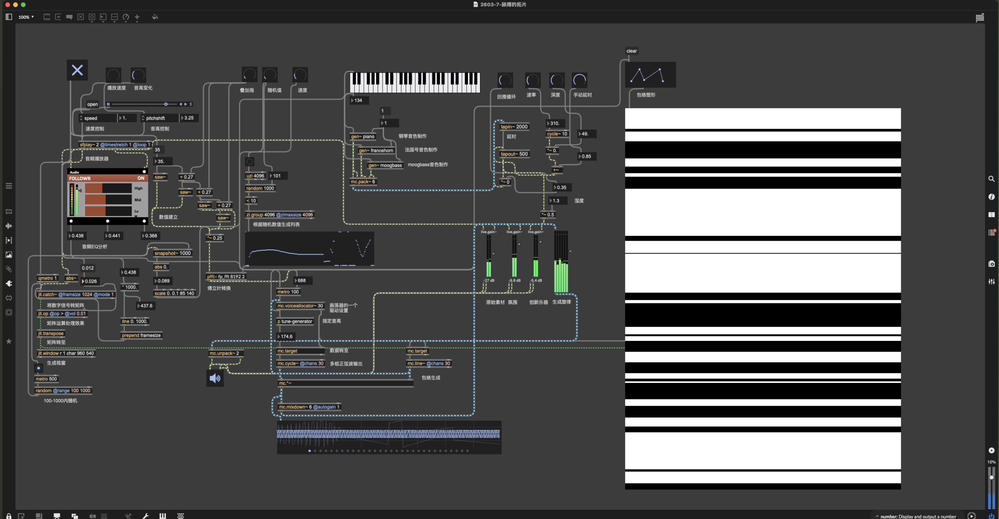
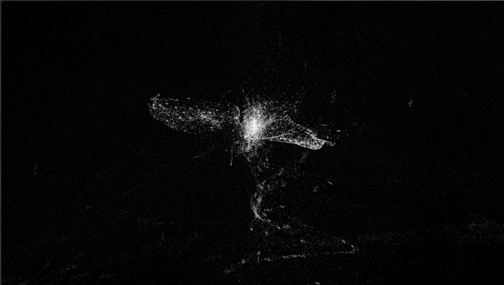
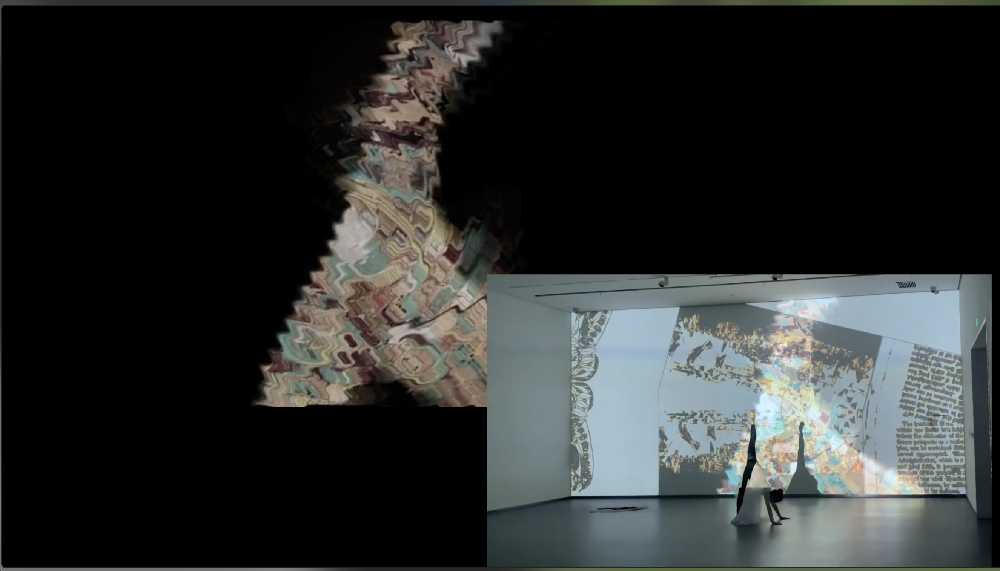
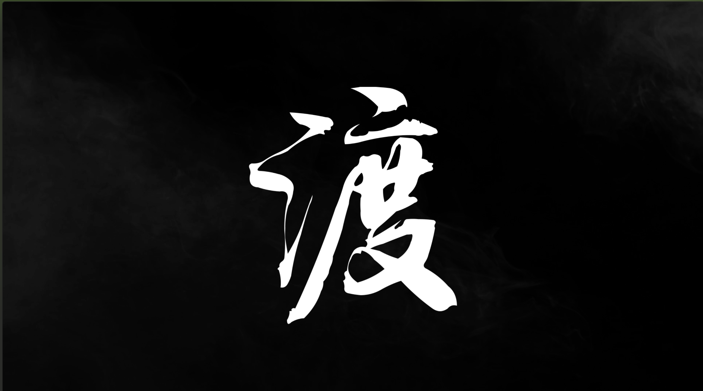

关于我 / About Me
我是一名专注于声音设计与电子音乐创作的创作者，致力于探索声音在时间、空间与交互中的表现力。我的作品常结合算法生成、视觉艺术与表演，试图在技术与人文之间建立对话。
I am a sound designer and electronic music composer dedicated to exploring the expressive power of sound in time, space, and interaction. My works often combine algorithmic generation, visual art, and performance, aiming to build a dialogue between technology and humanity.
基于Max/MSP的算法音乐 / Algorithmic Music with Max/MSP
《脉搏的拓片》 / Echoes of Pulse


这是一个探索声音原生性与再生的实时音频生成系统。我们将一个采样音色，解构为不同频率、音调与时间形态（点与线）的切片，并将这些切片“记忆”为全新的音符单元，共同构成一件自衍生的乐器。系统驱动这件乐器内部的音符，以多重速度与随机性进行组合、对话与层叠，每一次演算，都是对原始声音“脉搏”的一次不可复制的“拓印”，生成流动而有机的乐曲。作品在实验性的技术逻辑之下，探讨声音的痕迹、变异与自主生命，邀请听者感受一场声音挣脱载体后，在数字场域中自由生长的哲学叙事。
An exploration into the primacy and regeneration of sound, this real-time audio generation system deconstructs a sampled timbre into slices of frequency, pitch, and temporal form (points and lines), then “memorizes” them as new musical note units to form a self-derived instrument. The system drives these internal notes to combine, converse, and layer at multiple speeds and with randomness—each calculation becomes an unrepeatable “imprint” of the original sound’s “pulse,” generating flowing and organic music. Under its experimental technical logic, the work explores traces, mutations, and autonomous life of sound, inviting listeners to experience a philosophical narrative of sound breaking free from its medium and growing freely in the digital realm.
技术：Max/MSP
Technology: Max/MSP 观看演示 (Watch Demo)
《熵的预言》 / Prophecy of Entropy


这是一件聚焦“机器自主运动”未来叙事的实验性作品。视觉上，以TD粒子与持续分叉的动态线条构建充满张力、不确定性的黑白场景，隐喻随机与叙事路径的纠缠；音效融合loop音色、点状高频、低频鼓及自然采样，经五轨随机演奏（一轨pad基底+四轨随机音轨）驱动视觉叙事。作品借机器脱离人类操控的预言意象，叩问人类在熵增时代的方向与存在意义，以视听随机生成的混沌美感，呈现科技与人文的思辨性对话。
An experimental work centered on the future narrative of “machine autonomy.” Visually, it uses TD particles and continuously branching dynamic lines to construct a tense, uncertain black-and-white scene, metaphorically representing the entanglement of randomness and narrative paths. Sonically, it blends looped timbres, point-like high frequencies, low-frequency drums, and natural samples, driven by five random tracks (one pad base + four random tracks) to propel the visual narrative. Through the imagery of machines breaking free from human control, the work questions humanity’s direction and meaning in an era of entropy, presenting a speculative dialogue between technology and humanity through the chaotic beauty of audiovisual random generation.
技术：Max/MSP, Touch Designer
Technology: Max/MSP, Touch Designer 观看演示 (Watch Demo)
基于Cubase的电子音乐 / Electronic Music with Cubase
《对话的维度》 / Dimensions of Dialogue

这是一首叙事性电子音乐作品。他从人的自身出发，探讨与自然界的对话以及共存。因共存而对话，又因对话而共存，使其达到人与自然和谐共生的境界。整部电子音乐主要运用Shevannai、Omnisphere、Kontakt音源，力求构建一个富有哲思的音乐空间。
A narrative electronic music piece that begins with the human self and explores dialogue and coexistence with the natural world. Coexistence leads to dialogue, and dialogue leads to coexistence, achieving a state of harmonious symbiosis between humanity and nature. The entire piece primarily utilizes Shevannai, Omnisphere, and Kontakt sound sources to construct a philosophically rich musical space.
技术：Cubase
Technology: Cubase 观看演示 (Watch Demo)
行为与数字媒介交互的电子音乐演出 / Performance & Digital Media Interactive Electronic Music
《乐园·浮世众生》 / Paradise · Floating World Beings


《乐园·浮世众生》是基于Kinect捕捉的电子音乐舞台演出。作品将地球比作人类赖以生存的乐园，一切万物都对我们敞开怀抱，人们根据自身夙愿探寻生活。敦煌文化有着极高的艺术价值，作品视觉上以敦煌壁画为主，采用Kinect进行人体动作捕捉，配合AE进行视觉设计呈现最终效果，音乐上采用Cubase软件进行创作，采用远古人声、中国鼓等音源，力图呈现人与自然和谐共生的场景。
"Paradise · Floating World Beings" is an electronic music stage performance based on Kinect motion capture. The work compares Earth to a paradise on which humanity depends for survival, where all things open their arms to us, and people explore life according to their aspirations. Dunhuang culture holds immense artistic value; visually, the work features Dunhuang murals, using Kinect for human motion capture and After Effects for visual design to present the final effect. Musically, it is created with Cubase, utilizing ancient vocal samples, Chinese drums, and other sound sources, striving to depict a scene of harmonious coexistence between humanity and nature.
技术：Max/MSP, Kinect, Cubase
Technology: Max/MSP, Kinect, Cubase 观看演示 (Watch Demo)
装置作品 / Installation Works
《渡》 / Crossing


作品《渡》是一个装置作品。水在唐诗中有着非凡的地位，自古以来都是古人心情的意象。作品采用投影、灯光、雾机进行配合，力图呈现出东方哲学中水的流动、变化与转化，引导观众在虚实之间感受时间的流逝与生命的流转。
"Crossing" is an installation work. Water holds an extraordinary place in Tang poetry and has long been a symbol of ancient emotions. The work combines projection, lighting, and fog machines to present the flow, change, and transformation of water in Eastern philosophy, guiding viewers to experience the passage of time and the circulation of life between reality and illusion.
技术：AE, 投影, 起雾机, 灯光
Technology: After Effects, Projection, Fog Machine, Lighting 观看演示 (Watch Demo)